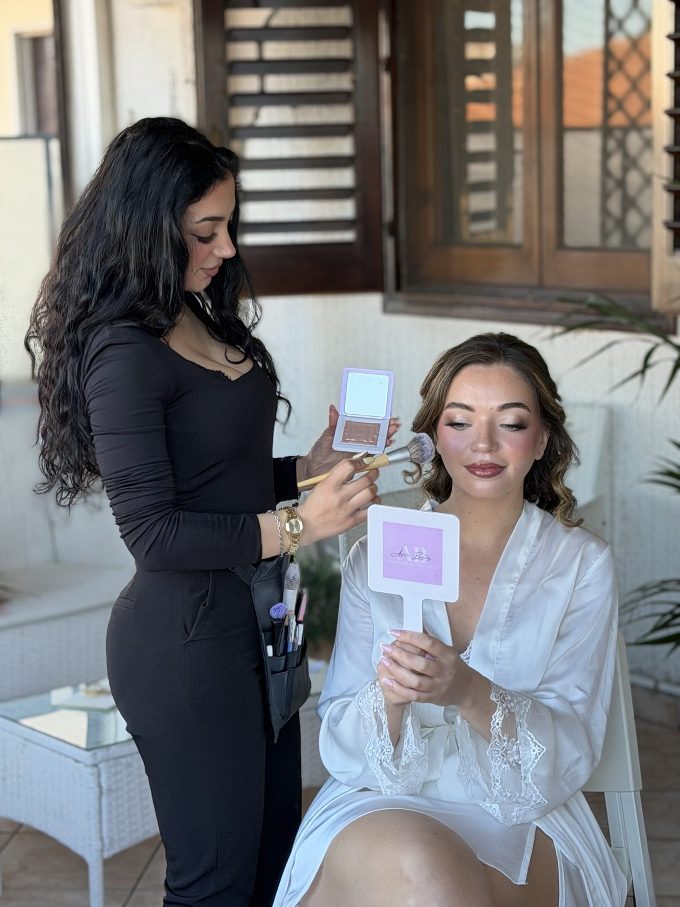
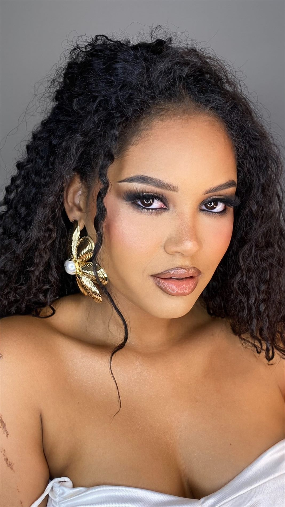
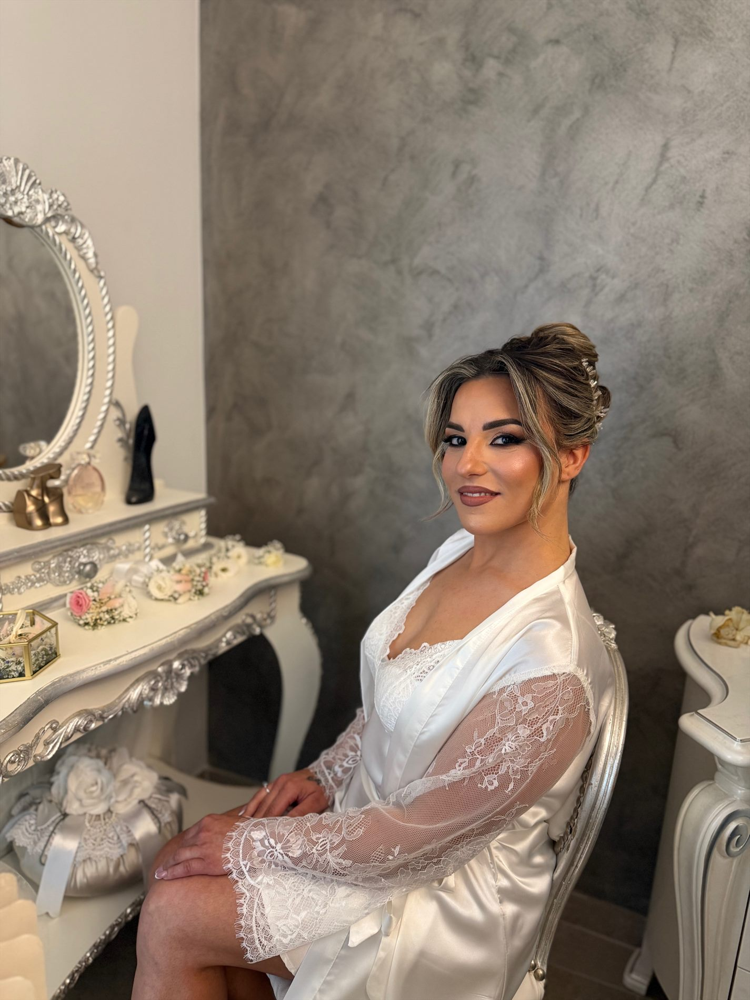
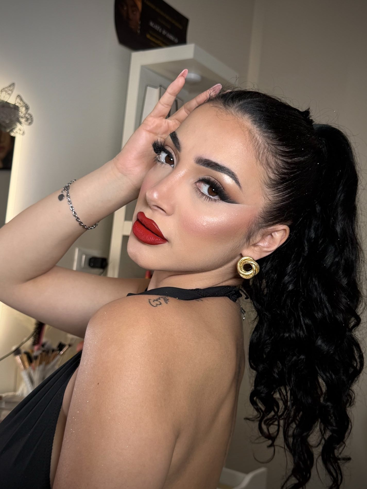
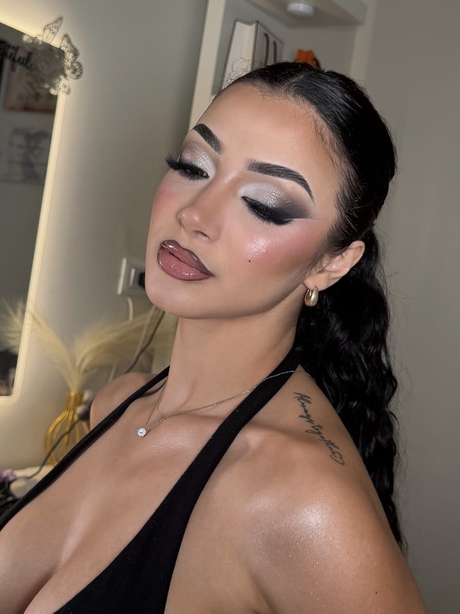
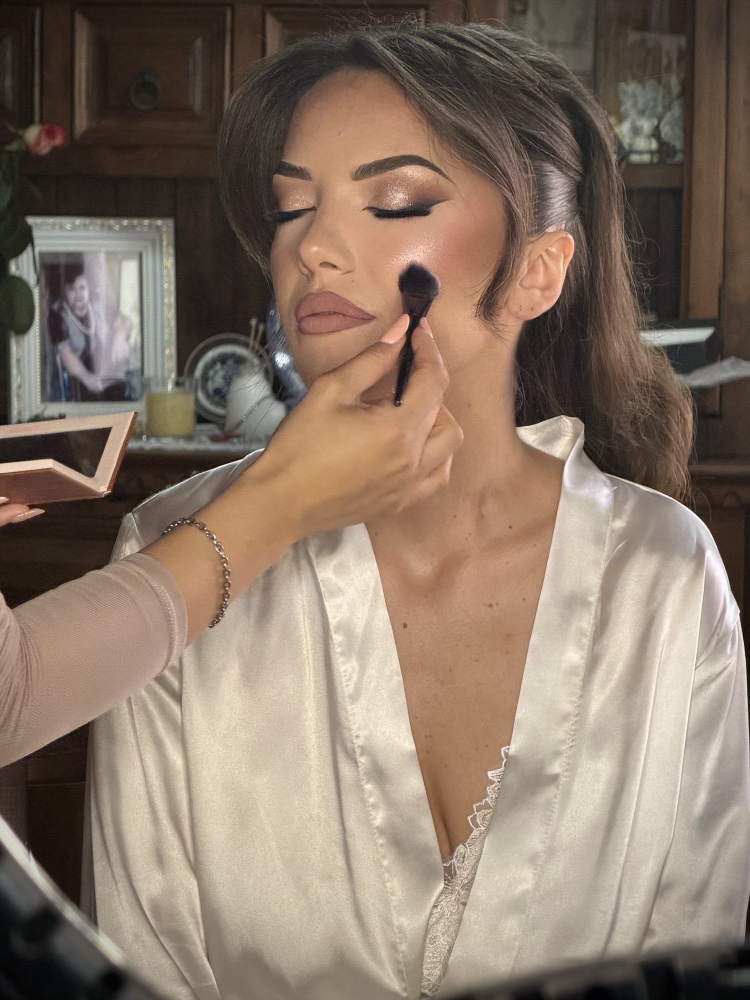
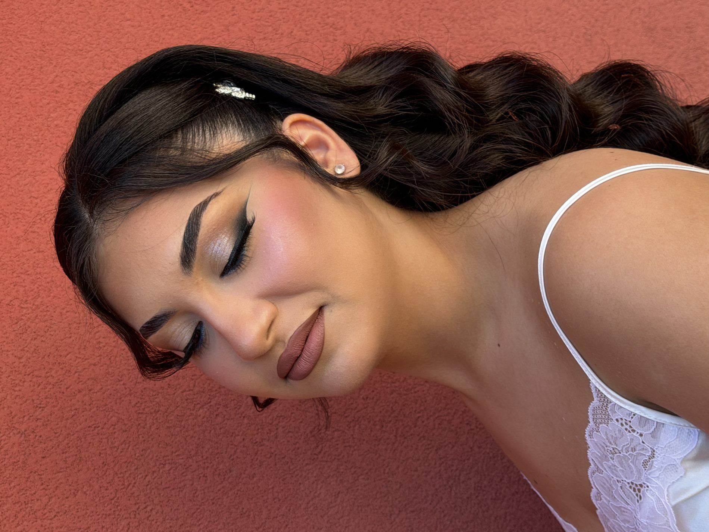
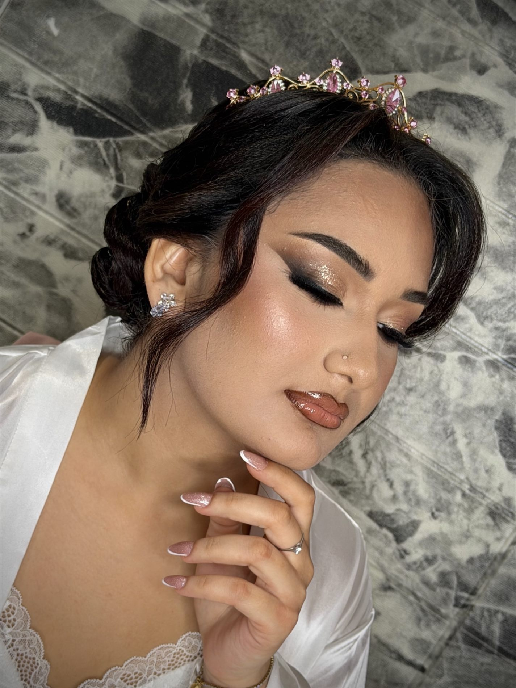
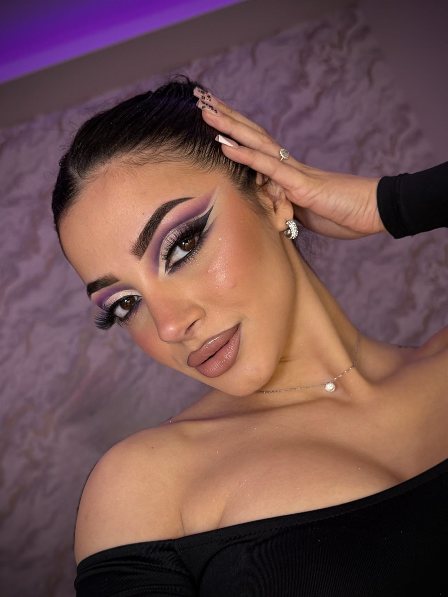
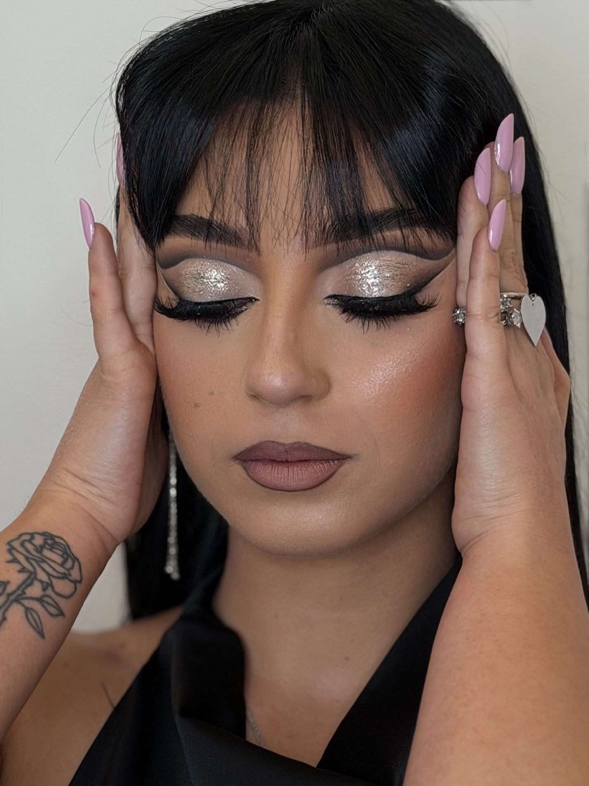

Bridal backstagepelle luminosa, ritocchi delicati e calma prima del sì
Una selezione di look pensati per valorizzare il viso con luce, definizione e naturalezza.



Close-up, backstage e dettagli occhi per mostrare la resa del makeup in contesti diversi.







Il focus è sulla pelle, sull'armonia dei lineamenti e su un risultato che resta riconoscibile.
Correzione leggera, punti luce controllati e pelle dall'aspetto fresco.
Intensità modulata in base a forma dell'occhio, occasione e luce.
Texture controllate per evitare effetto lucido e mantenere tridimensionalità.
Se hai un evento, una cerimonia o uno shooting in arrivo, raccontami cosa immagini.
Scrivi in DirectDesign & development by green